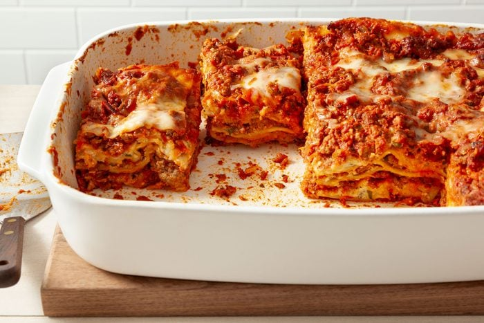

lasagna

Description
这是一道美味的千层面！
Ingredients
- Lasagna noodles
- Ground beef
- Tomato sauce
- Mozzarella cheese
Steps
- Preheat the oven to 375°F (190°C).
- Cook the lasagna noodles according to the package instructions.
- In a skillet, cook the ground beef until browned. Drain excess fat.
- Add tomato sauce to the cooked beef and simmer for 10 minutes.
- In a baking dish, layer the cooked noodles, meat sauce, and mozzarella cheese. Repeat layers until all ingredients are used, ending with cheese on top.
- Bake in the preheated oven for 25-30 minutes, or until the cheese is melted and bubbly.
- Let the lasagna cool for a few minutes before serving. Enjoy!
Back to Home